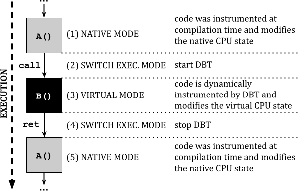
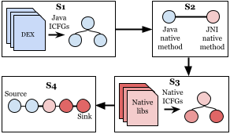
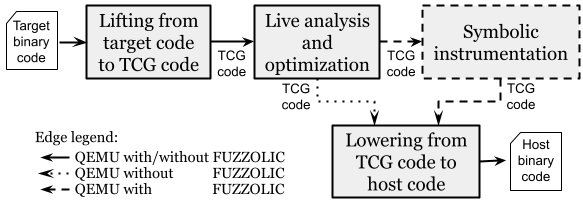
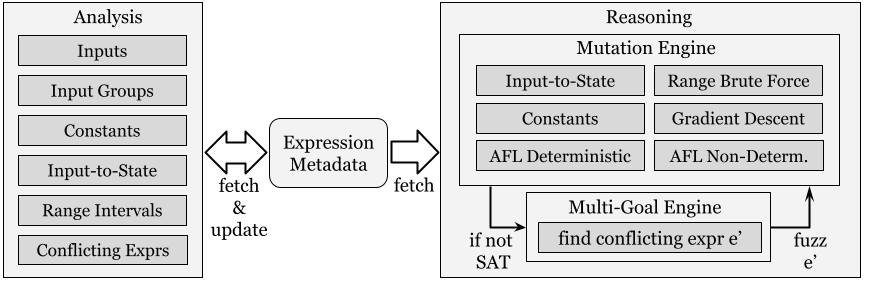
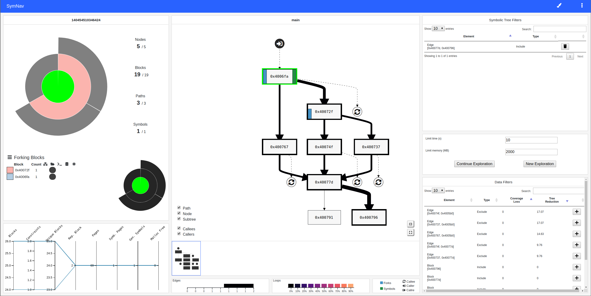
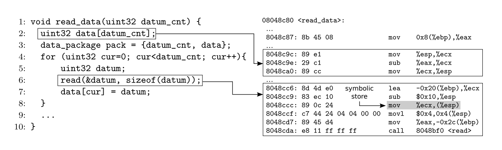

Info
Research interests:
I like to study how programs run. During my PhD, I have analyzed programs to improve or predict their performance.
After the PhD, I used program analyses to find bugs/vulnerabilities in real-world applications or to perform reverse engineering,
e.g., in the context of malware. I am also fascinated by low-level (attack) techniques such as Return-Oriented Programming.
Email:
ecoppa [at] luiss.it
Office:
Luiss University, Viale Romania 32, Rome - room 539
 :
:
Funded projects
PRIN 2022
Project FARE (Firmware Analysis for vulneRability dEtection) aims at devising novel static and dynamic analysis techniques able to identify portions of code that may contain software vulnerabilities in embedded systems.
Role: PI / head of research unit (LUISS).
Project website:
fare-project.github.io
PRIN 2022 PNRR
Project SETA (Studying thE impact of anti-analysis Techniques in IoT security evAluations) aims at evaluating the impact of anti-analysis techniques possibly used by IoT devices and other embedded devices to hinder security evaluations.
Role: co-PI / head of research unit (LUISS).
Project website:
prin.unica.it/seta
PR FESR LAZIO
2021-2027
Project METIS (Modular Early Threat Identification System) aims at designing effective and practical threat intelligence solutions.
Role: PI for Sapienza.
Thesis Opportunities
Our research group is always looking for bright and motivated students. We are working on several
research projects involving software security topics, such as fuzzing, symbolic execution, binary analysis,
and reverse engineering techniques. If you are looking for an idea for your thesis or a project for your honors program,
feel free to contact me via email :)
Education
2023 - 2034
National Scientific Qualification as Associate Professor.
Disciplinary fields: 09/H1, 01/B1.
Feb 2024 - Present
Assistant Professor (Tenure Track, RTT) at LUISS University.
Oct 2020 - Jan 2024
Assistant Professor (RTD-A) at Sapienza University of Rome.
Jan 2016 - Sep 2020
PostDoc at Sapienza University of Rome
with Prof.
Camil Demetrescu
(demetres [at] dis.uniroma1.it).
Oct 2012 - Dic 2015
Ph.D. in Computer Science at Sapienza University of Rome.
Advisor: Prof.
Irene Finocchi (finocchi [at] di.uniroma1.it).
Apr 2015 - Jul 2015
Visitor at TU Darmstadt. Prof.
Patrick
Eugster (peugster [at] cs.purdue.edu).
Oct 2010 - Oct 2012
Master of Science in Engineering in Computer Science (taught in English) at
Sapienza University of Rome.
Final grade: 110/110 summa cum laude.
Thesis Advisor: Prof.
Camil Demetrescu
(demetres [at] diag.uniroma1.it).
Sept 2007 - Oct 2010
Bachelor of Science in Engineering in Computer Science at
Sapienza University of
Rome. Final grade: 110/110.
Thesis advisor: Prof.
Camil Demetrescu
(demetres [at] diag.uniroma1.it).
Projects

SymFusion devises a novel hybrid instrumentation approach for concolic execution, where the core components of an application can be instrumented
at compilation time (e.g., using an LLVM pass), while the remaining components can be dynamically instrumented at execution time (e.g., using QEMU DBT). The goal is to achieve the benefits of both approaches in terms of efficiency and flexibility.
Related papers: [SYMFUSION-ASE22]

Framework for testing the reachability of native functions in Android applications. Solving this task can be essential for several security tasks, e.g., to show that a vulnerable function within a library is indeed reachable by an application and thus it requires immediate attention.
Related papers: [DROIDREACH-ESORICS22]

Fuzzolic - Fuzzing + Concolic
Fuzzolic is a new concolic executor based on QEMU. It can be paired with a coverage-guided fuzzer, such as AFL++, to find bugs in real-world programs.
Related papers: [FUZZYSAT-ICSE21],
[FUZZOLIC-COSE21]

Fuzzy-SAT - Approximate solving
Fuzzy-SAT is an approximate solver that can efficiently solve queries generated by concolic execution using techniques borrowed from the fuzzing domain.
Related papers: [FUZZYSAT-ICSE21],
[FUZZOLIC-COSE21]

SymNav - Visually assisting symbolic execution
A prototype tool that visualizes the state of a symbolic execution analysis
by plotting relevant data on a sunburst (that represent the symbolic execution tree),
and on the control flow graph of the program. Furthermore, the tool allows the user
to interact and refine the analysis, allowing him to interactively prune the symbolic execution tree
Related papers: [SYMNAV-VIZSEC19]

MemSight - Reasoning on symbolic pointers
A new approach to
symbolic memory that reduces the need for concretization, hence
offering the opportunity for broader state explorations and more
precise pointer reasoning.
Related papers: [MEMSIGHT-ASE17] [MEMSIGHT2-STVR19] [MINT-ISEC22]
NearestFit - Predicting
MapReduce performance
The NearestFit progress indicator targets accuracy of progress predictions for MapReduce jobs in
the presence of
data skewness and super-linear computations. This is achieved combining performance profiling,
machine learning
techniques, and data streaming algorithms.
Related papers: [CF-SOCC15]
This project contains several diagrams describing Apache Hadoop internals (2.3.0 or later).
aprof - Input-sensitive profiling
aprof is a Valgrind tool for performance profiling designed to help developers discover hidden
asymptotic
inefficiencies in the code. From one or more runs of a program, aprof measures how the
performance of individual
routines scales as a function of the input size, yielding clues to its growth rate.
Related papers: [CDF-PLDI12] [CDFM-CGO14] [CDF-TSE14] [C-VAL14]
Publications
My latest publications:
{% raw %}
-
[{{ p.id }}]
{{ a.given }} {{ a.family }}, and.
{{ p.title }}.
{{ p['container-title'] }}
({{ p['collection-title'].replace('\'', '20') }}),
{{ p.issued['date-parts'][0][0] }}. {{ p.note }}.
[DOI]
[DOI]
[PDF]
[SLIDES]
[PROJECT SITE]
[BIBTEX]
{% endraw %}
Teaching
- [2023-2024] Informatica: professor. website.
- [2023-2024] Cybersecurity (Web Security module): professor. website.
- [2022-2023] Advanced techniques for finding bugs in real-world software: professor. website.
- [2022-2023] Computer System Architecture (Sistemi di Calcolo): professor. website.
- [2022-2023] Cybersecurity (Web Security module): professor. website.
- [2021-2022] Advanced techniques for finding bugs in real-world software: professor. website.
- [2021-2022] Computer System Architecture (Sistemi di Calcolo): professor. website.
- [2021-2022] Web Security and Privacy (Web Security module): professor. website.
- [2021-2022] Cybersecurity (Web Security module): professor. website.
- [2020-2021] Advanced techniques for finding bugs in real-world software: professor. website.
- [2020-2021] Computer System Architecture (Sistemi di Calcolo): professor. website.
- [2020-2021] Computer and Network Security: professor. website.
- [2019-2020] Computer System Architecture (Sistemi di Calcolo): adjunct professor. website.
- [2018-2019] Computer System Architecture (Sistemi di Calcolo I): adjunct professor. website.
- [2017-2018] Computer System Architecture (Sistemi di Calcolo I): adjunct professor. website.
- [2016-2017] Computer System Architecture (Sistemi di Calcolo I): teaching assistant. website.
- [2015-2016] Fondamenti di Informatica II: teaching assistant.